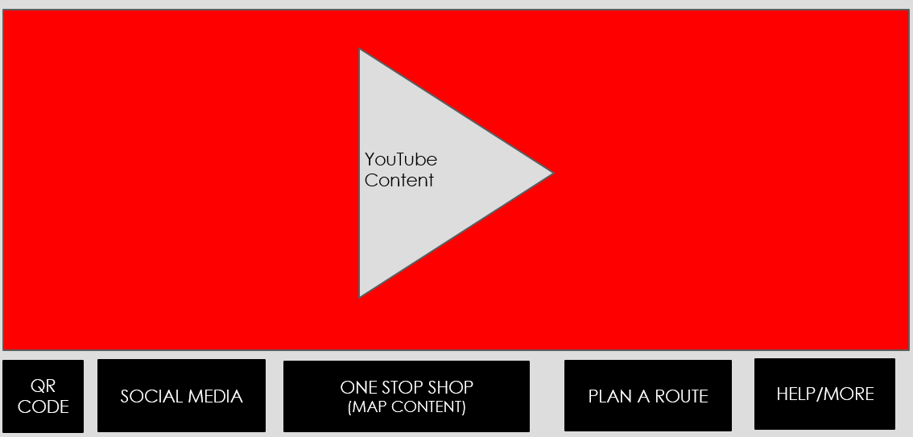
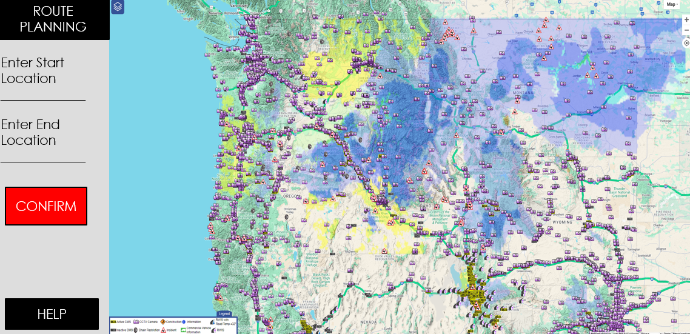

One Stop Shop UI Design

In the CSCI 443 User Interface Design course at Montana Tech, I worked on creating designs for an interactive interface for the One Stop Shop weather share website. Our class was tasked with creating plans for a interactive kiosk type display that travelers could use to get more information about their travels.

My design proposal was modeled in powerpoint, this was to illustrate my ideas of how it could be implemented. I proposed a large interface that could play live vidoes streamed on youtube of the local area's weather conditions. Users could select from the buttons at the bottom to plan a route, get more info, etc. When plannig a route a user would enter their start and end locations and get information about any undesirable weather along the path.